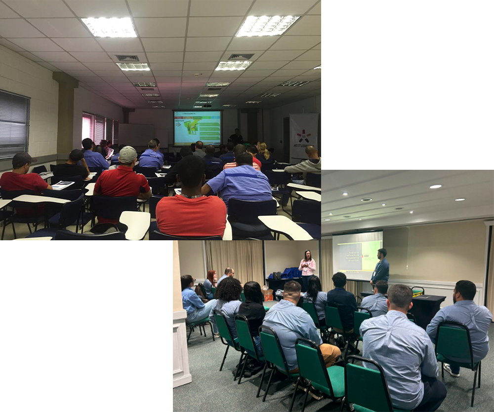

TREINAMENTOS PADRONIZADOS
Conteúdo Padrão, realizados IN COMPANY, À DISTÂNCIA ou MISTO
Focados na soluções necessárias à maioria das organizações, atualizados conforme às melhores práticas de gestão.
Na modalidade “À Distância” temos a flexibilidade e um menor custo para sua organização, já na modalidade “In Company” temos um maior envolvimento das pessoas e sendo consequentemente mais efetivo.
Para treinamentos com mais de um módulo, pode-se optar pela modalidade MISTO, com o primeiro módulo presencial e o segundo à distância, por exemplo.
O objetivo principal é a preparação e capacitação das equipes para o seu desenvolvimento durante a realização dos projetos de melhoria ou o aprimoramento da rotina dos processos.
De forma prática e dinâmica, oferecemos nosso conhecimento especializado, com o foco na melhoria de resultados.
GESTÃO INTEGRADA DE LÍDERES
Conceituação do negócios, dos processos e das diversas funções dentro das organizações. Inclue exemplos e atividades focadas aos principais tipos de de negócio ou processos: industriais, comerciais ou de serviços. Induzindo os líderes à identificar oportunidades de melhoria e conduzir os processos para o alcance de resultados gerenciais.
GESTÃO DE MELHORIA E ROTINA
Avaliação das prioridades dos negócios da organização, e, a capacitação para acelerar os ganhos de gestão por meio do método de análise e solução de problemas (PDCA), com suas ferramentas, e, a manutenção de resultados sustentáveis (SDCA). Permite o desenvolvimento de práticas de gestão eficizes na obtenção de resultados.
GERENCIMENTO DA MANUTENÇÃO
Capacitam as equipes na melhoria do planejamento, programação, controle e otimização da manutenção de equipamentos, focando o aumento da disponibilidade e na redução de custos, com a avaliação de indicadores e práticas.
GESTÃO DE ATIVOS
Visa capacitar os participantes na gestão do ciclo de vida dos ativos, otimizando seu desempenho, riscos e custos com o foco na manutenção de equipamentos. Foca na aplicação prática e em conceitos-chave como riscos, confiabilidade e métricas de desempenho.
AUMENTO DE RECEITA
Foco na avaliação e análise do desempenho de vendas e receitas da organização, visando identificar as principais perdas e oportunidades de melhoria, com o planejamento para o foco no aumento de receitas com rentabilidade.
REDUÇÃO DE CUSTOS
Treinamento para a redução de custos de produção, de serviços ou de vendas, focada na avaliação de seu desempenho, e, em práticas e ferramentas de controle e planejamento de melhorias.
REDUÇÃO DE DESPESAS
Capacitação visando melhorar o controle e resultados de despesas da organização, de forma linear ou matricial, com o método e ferramentas de apoio.
EXCEL PARA RESULTADOS
Foco na aplicação do Excel como ferramenta de gestão e controle para suportar os processos e sistemas da organização, capacitação as equipes de maneira prática e objetiva, visando melhorar seus resultados.
5S – A BASE PARA A GESTÃO
Transmitir de maneira prática os conceitos do 5S e as principais ferramentas de avaliação, controle e planejamento para sustentar o método ao longo do tempo, trazendo resultados reais e mensuráveis para a organização.
AUDITORES DE 5S
Capacitação e formação da equipe de auditores internos, visando a manutenção dos conceitos e práticas de 5S na organização, incluindo as práticas e ferramentas aplicáveis: padrões, modelos, formulários, cronogramas, e, uma auditoria na prática.
Conteúdo Personalizado, realizados IN COMPANY, À DISTÂNCIA ou MISTO
CONTEÚDO PERSONALIZADO
Com exemplos e atividades direcionadas para o tema em questão e ao tipo de negócio ou processos da organização.
PÚBLICO ALVO
Conforme a área ou nível da organização, com personalização para o nível estratégico, tático ou operacional.
LOCAL DE REALIZAÇÃO
Conceitual, em Sala de Aula, ou, Focado, nas Áreas Produtivas ou de Processos da organização.

CONTEÚDO PERSONALIZADO
Com exemplos e atividades direcionadas para o tema em questão e ao tipo de negócio ou processos da organização.
PÚBLICO ALVO
Conforme a área ou nível da organização, com personalização para o nível estratégico, tático ou operacional.
LOCAL DE REALIZAÇÃO
Conceitual, em Sala de Aula, ou, Focado, nas Áreas Produtivas ou de Processos da organização.